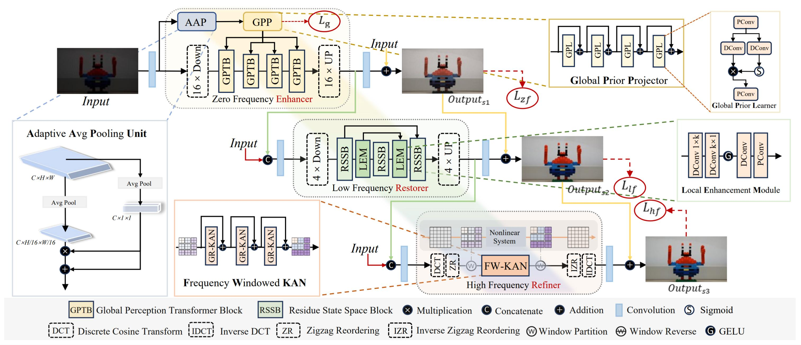
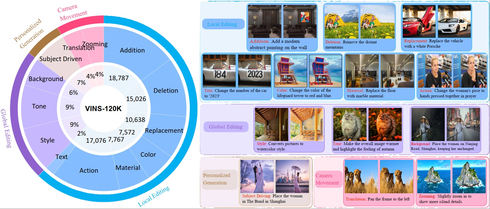
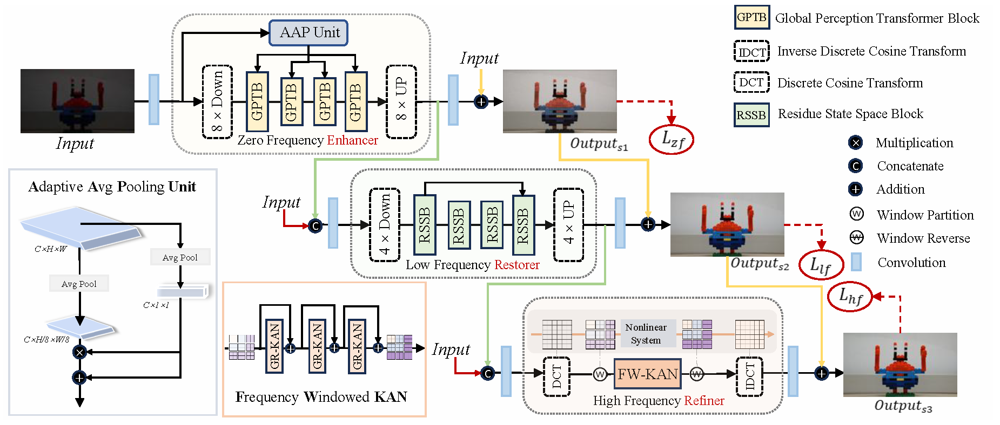
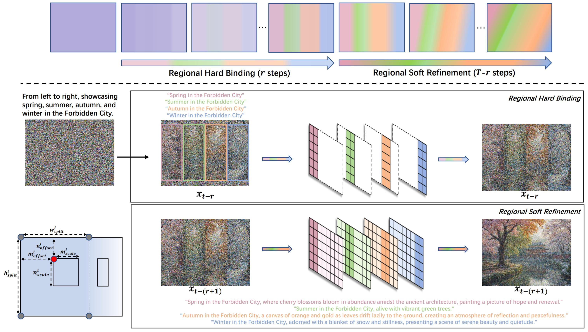

Zhizhou Chen 陈至周
Currently seeking opportunities in AIGC, Multimodal and Agent.
Email: zhizhouchen@smail.nju.edu.cn
About Me
I am a M.S. student in Computer Science and Technology at Nanjing University, advised by Associate Professor Tai Ying. Before that, I received my B.Eng. degree in Artificial Intelligence from the School of Informatics, Xiamen University, where I ranked 3/91 with a GPA of 3.73/4.00.
My work focuses on generative vision and high-resolution visual generation, with research and engineering experience in diffusion-based image editing, ultra-high-definition image restoration, digital human generation, and research-to-product transfer.
- Ultra-high-resolution image generation, editing, and restoration
- Multimodal understanding and controllable generation
- Pixel-space diffusion model generation
- Talking face and digital human generation
Publications
* Equal contribution. † Corresponding author.
Journal
Conference


Internship Experience
vivo
Assistant Algorithm Engineer, Imaging Planning and Advanced Research Department
- Built a high-quality 4K image editing data pipeline, covering data collection, cleaning, filtering, and integration of high-quality training data.
- Conducted large-scale training on a hundred-GPU cluster, extending and optimizing business models toward 4K-resolution image generation and editing.
- Addressed product-side issues such as insufficient visual details and facial identity degradation, contributing to iterative improvements of related AI imaging products.
China Mobile Research Institute
Remote Algorithm Intern
-
Built a two-stage talking face generation system following
Audio -> 3D Expression -> Face Rendering, covering data processing, framework construction, training, and tuning. - Tackled product-side challenges in audio-visual synchronization, identity preservation, and tooth detail generation by exploring 3D facial identity-expression coefficient prediction, effective coefficient injection, and adaptive masks that preserve facial shape and tooth geometry, significantly improving online visual quality.
- Improved facial rendering quality and inference efficiency, achieving real-time performance and supporting deployment in China Mobile's video secretary product as well as the digital human keynote speech for the opening guest at the 2024 Digital China Summit.
Open Source Project

RAG-Diffusion
Region-controllable and identity-consistent text-to-image generation.
623 GitHub stars